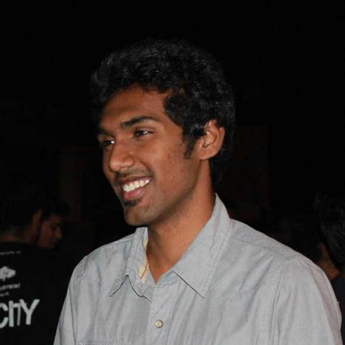

| Home | Research | Publications | Acedamics | Download CV |
|  |
I am a Masters Research student at
Robotics Research Center in IIIT-Hyderabad under the guidance of
Dr.Suril V.Shah and
Dr.K Madhava Krishna.
I have a backing of B.Tech degree in Mechanigal Engineering from VIT, vellore.
My inspiration comes from amazing abilities displayed by the biological systems of nature. I aspire to bring robotic systems on par with biological counterparts in terms of perception, movement and control. I am eager to explore the following research topics
|
Research Projects
Research in IIIT-Hyderabad has helped me dive into the field of robotics giving me a good sense of the contemporary problems prevailing in the field. I worked on the following projects
Floating Base Dual Arm Manipulator(MS Thesis)The setup is a redundant dual arm manipulator mounted on a floating base satellite with camera at end of each arm for visual feedback. With the task of visual servoing to a target, we could
|
 |
Modular Setp Climbing RobotA fully actuated multi-module robot traversing on uneven terrain. Conversely, an attempt was made to design a multi-module system having actuators only at alternate link joints. Design of control schemes and optimization of the design parameters contribute to the increased performance of the traversal of uneven terrain. More details here |
 |